Base-graphics coefficient and diagnostic plots of a panglm() fit.
Usage
# S3 method for class 'panglm'
plot(
x,
which = c("coefficients", "residuals", "fitted", "qq", "calibration", "rootogram",
"density", "effects", "correlation"),
level = 0.95,
parm = NULL,
type = c("pearson", "response"),
bins = 10,
max = NULL,
bw = "nrd0",
cells = FALSE,
main = NULL,
xlab = NULL,
...
)Arguments
- x
a fitted
"panglm"object- which
one of
"coefficients","residuals","fitted","qq","calibration","rootogram","density","effects"or"correlation"- level
confidence level for coefficient and calibration intervals
- parm
names or positions of the terms of the coefficient and correlation plots; by default every term except
"(Intercept)"- type
residuals of the
"residuals"view,"pearson"(default) or"response"- bins
number of quantile bins of the calibration plot
- max
largest count of the rootogram; by default the 99th percentile of the outcome
- bw
bandwidth of the kernel densities of the
"density"and"effects"views, passed tostats::density()- cells
for
"correlation", print the correlation in each cell- main
optional plot title
- xlab
optional horizontal-axis label
- ...
additional arguments passed to
graphics::plot.default()
Details
"coefficients": estimates with Wald confidence intervals (the dot-and-whisker layout shared by every panglm coefficient plot and bycoefplot()); the left margin is sized to the longest term label."residuals": residuals against fitted values with astats::lowess()smooth. Pearson residuals by default (seeresiduals.panglm()for the variance functions); for the ordered and Tobit families, where they are not defined, response residuals are drawn with a message. For log-link families (Poisson, negative binomial, log-link gamma) the fitted values are on a logarithmic axis, which spreads the many small means of count data."fitted": observed against fitted values with the 45-degree line."qq": normal Q-Q plot of the Pearson residuals with a reference line through the quartiles; for the Gaussian and gamma families the residuals are divided by the square root of the dispersion (standardized Pearson residuals). For discrete outcomes the plot is lumpy by construction and mainly shows skewness and outliers."calibration"(binomial families, logit or probit): observed proportion against mean predicted probability inbinsquantile bins of the predicted probability, with exact (Clopper-Pearson) binomial confidence intervals and the 45-degree line."rootogram"(Poisson and negative binomial families): hanging rootogram. The curve issqrt(E_k), the expected frequency of countksummed over observations,E_k = sum_i P(y_i = k); the bars of heightsqrt(O_k)(observed frequency) hang from it, so that bars ending above zero mark counts predicted too often and bars ending below zero counts predicted too rarely.P(y_i = k)is the Poisson or NB2 probability at the fitted mean for pooled and fixed-effects fits (the fixed-effects means include the estimated individual effects). For random-intercept fits it is the marginal probability of a single observation implied by the mixing distribution, which is exactly the distribution whose frequencies the rootogram compares: negative binomial with sizedfor the Poisson-gamma model, beta-negative binomial for the Hausman-Hall-Griliches negative binomial model. Random-slope fits have no closed-form marginal and are not supported."density"(Gaussian, gamma, beta and Tobit families): the kernel density of the observed outcome (stats::density(), bandwidthbw, grey) against the model-implied marginal density (orange), the average over observations of the density of a single outcome at the fitted parameters,f(t) = mean_i f(t | x_i). Gaussian:dnorm(t, eta_i, sigma)withsigma^2the residual variance; gamma:dgamma(t, shape = 1 / phi, rate = 1 / (phi mu_i))withphithe Pearson dispersion of the fit (thestats::glm()convention, also used in the paper); beta:dbeta(t, mu_i phi, (1 - mu_i) phi)withphithe precision; Tobit: the normal density on(left, right)plus point massesP(y = left) = mean_i pnorm((left - eta_i) / sigma)(and likewise atright), drawn as bars on the right-hand axis, observed share (grey) beside predicted probability (orange). For the Tobit family the observed kernel density uses the uncensored outcomes and is scaled by their share, so that both curves integrate with the masses to one. Random-effects fits use the marginal density, integrated over the random effect: in closed form for the Gaussian and Tobit families (variancesigma_e^2 + sigma_u^2, orsigma_e^2 + z' Sigma zwith random slopes) and by Gauss-Hermite quadrature (at least 21 nodes) for the gamma and beta families (the gamma random-intercept fit uses its maximum likelihood shape). Fixed-effects fits condition on the estimated individual effects (the fitted means include them), so the implied density is the in-sample fit withn + Gparameters; between fits are refused. A positive outcome whose 99th percentile exceeds 20 times its median is drawn on a logarithmic axis (log = "x"forces it,log = ""turns it off): both curves are then densities oflog(y), the implied oneexp(s) f(exp(s)), and point masses at zero sit left of the axis. Count families are refused in favour ofwhich = "rootogram"."effects": distribution of the estimated individual effects. Fixed-effects fits: histogram and kernel density (blue) offixef(). Random-effects fits: histogram and kernel density of the posterior meansranef(), with the assumed distribution of the random effect (dashed orange):N(0, sigma_u^2)for the normal random intercepts, the log-gamma density oflog(nu)for the Poisson-gamma model and the logistic-beta density oflog(delta)for the Hausman-Hall-Griliches negative binomial model. Empirical Bayes predictions are shrunk towards their mean, so the histogram is narrower than the assumed density; the subtitle compares the standard deviation of the predictions with the model one. A histogram much narrower than the curve signals little information per individual, not misspecification; marked skewness or several modes do suggest a non-normal effect distribution. With random slopes there is one panel per effect, then the intercept plotted against each slope with the 95% contour of the estimated normal distribution."correlation": heatmap of the correlation matrix of the estimates,cov2cor(vcov(x)), with a diverging palette centred at zero (blue negative, red positive, on the fixed range[-1, 1]) and a colour key;cells = TRUEprints the values. Strong correlations flag nearly collinear terms whose separate estimates are imprecise.parmselects the terms (by default all except"(Intercept)").
See also
fixef() and ranef() for the individual effects.
Other panglm methods:
coefplot(),
confint.panglm(),
effectcurve(),
fitted.panglm(),
fixef(),
glance.panglm(),
logLik.panglm(),
model.matrix.panglm(),
partialeffects.panordered(),
plot.panglm_ape(),
plot.panglm_effectcurve(),
predict.panglm(),
predict.panordered(),
residuals.panglm(),
summary.panglm(),
tidy.panglm(),
vcov.panglm()
Examples
data(copd)
fit <- panglm(fev1 ~ crp + age + treatment, data = copd,
index = c("id", "visit"), model = "random",
family = "gaussian")
plot(fit)
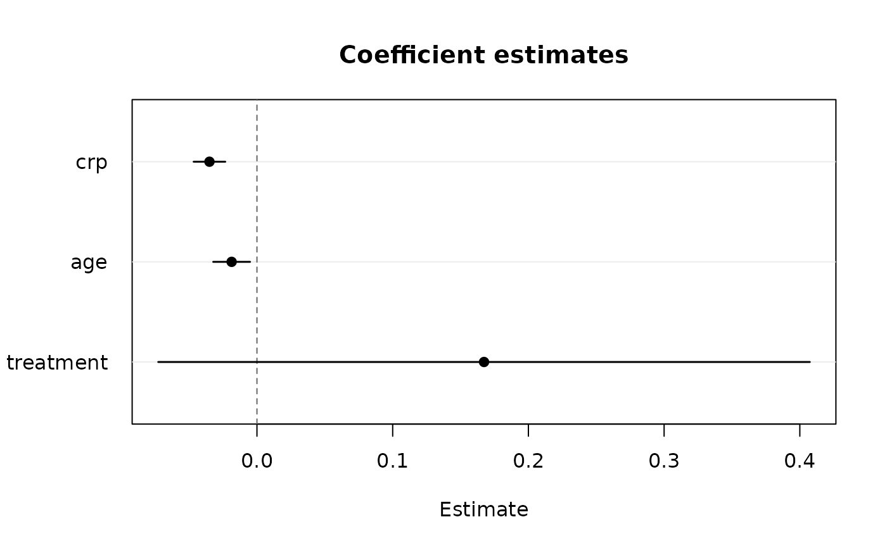
plot(fit, parm = c("crp", "treatment"))
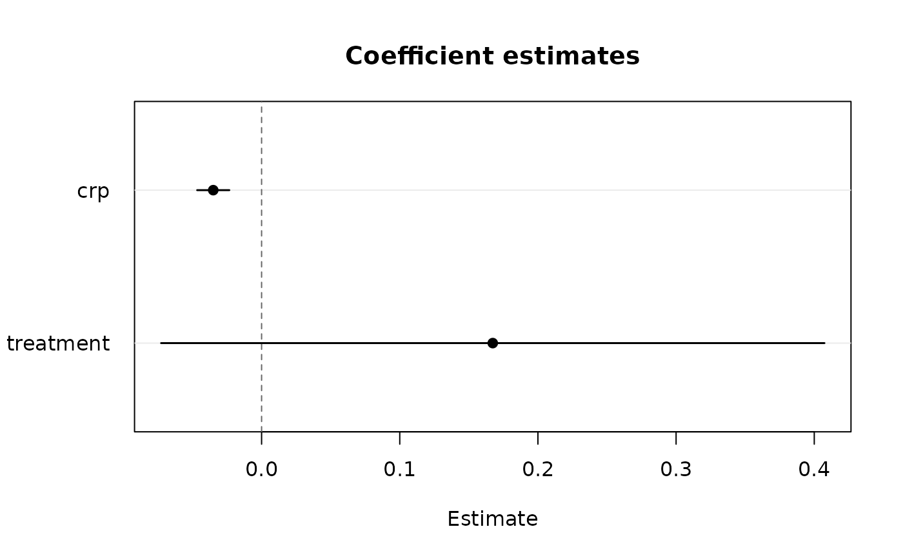
plot(fit, which = "residuals")
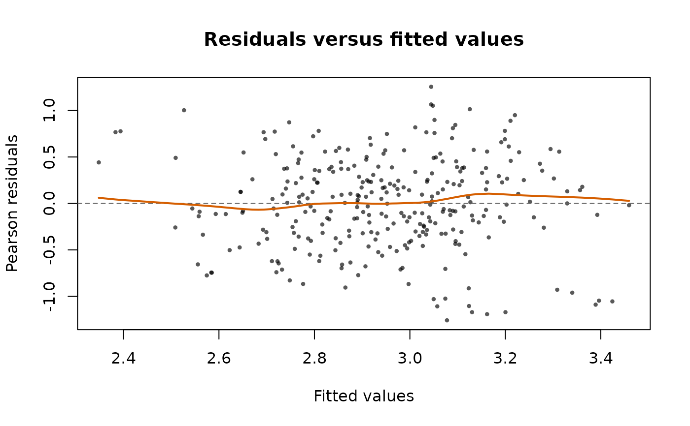
plot(fit, which = "qq")
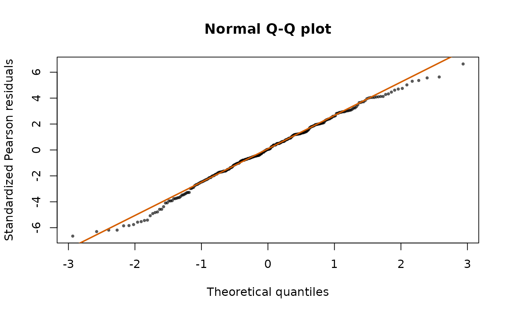
counts <- panglm(exacerbations ~ crp + treatment, data = copd,
index = c("id", "visit"), model = "pooling",
family = "negbin")
plot(counts, which = "rootogram")
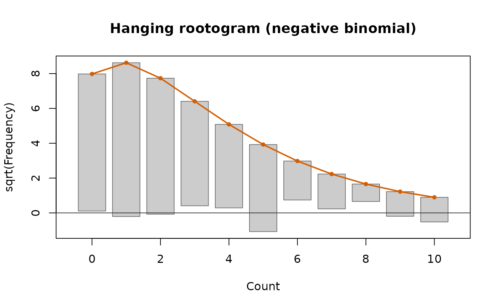
any_exacerbation <- panglm(I(exacerbations > 0) ~ crp + treatment,
data = copd, index = c("id", "visit"),
model = "pooling", family = "binomial")
plot(any_exacerbation, which = "calibration", bins = 5)
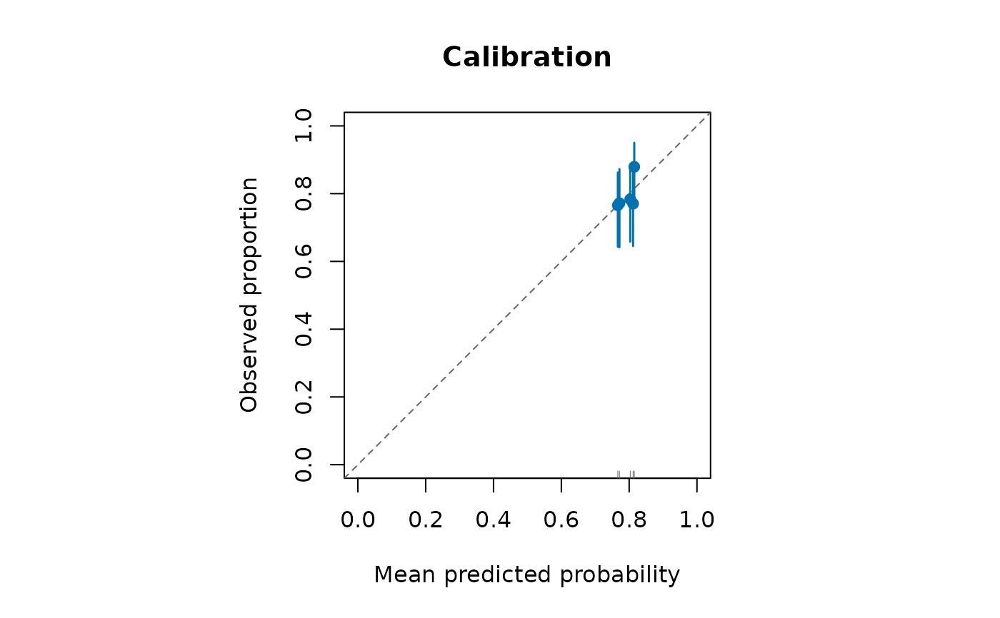
plot(fit, which = "density")
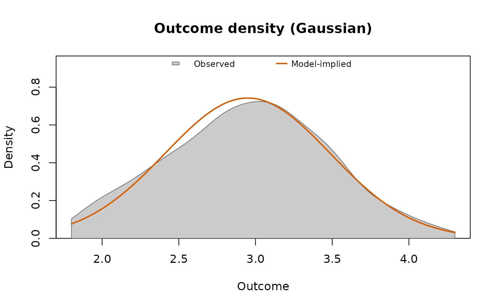
censored <- panglm(pmax(fev1, 1.5) ~ crp + treatment, data = copd,
index = c("id", "visit"), model = "pooling",
family = tobitfamily(left = 1.5))
plot(censored, which = "density")
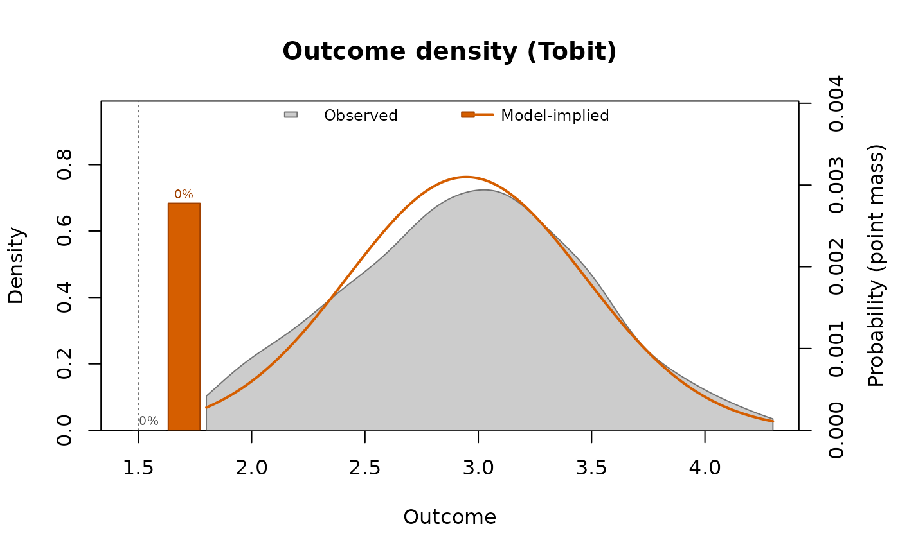
plot(fit, which = "effects")
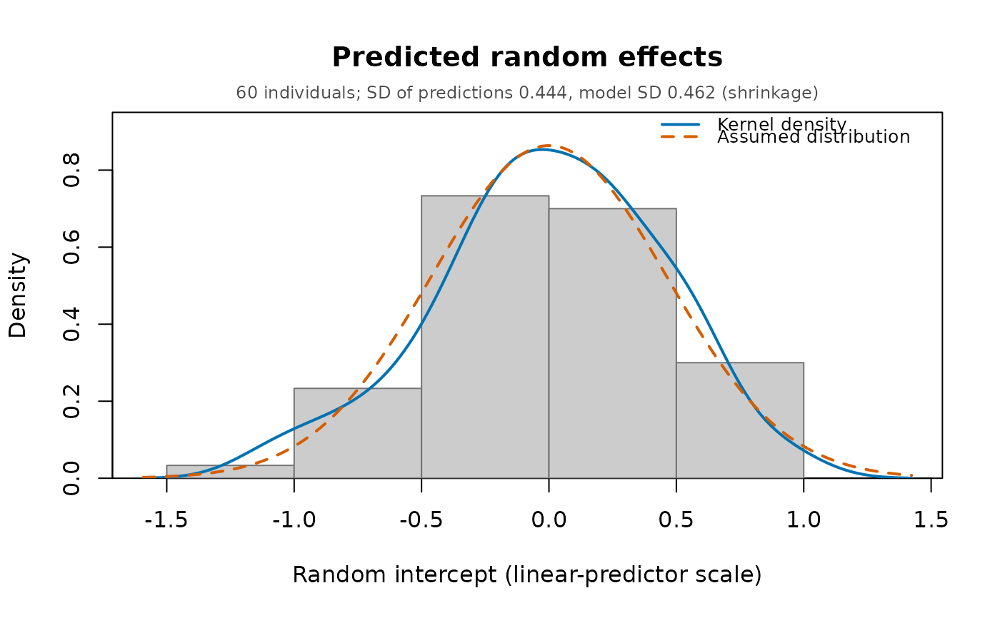
hosp <- panglm(hospitalized ~ crp + treatment, data = copd,
index = c("id", "visit"), model = "random",
family = "binomial")
plot(hosp, which = "effects")
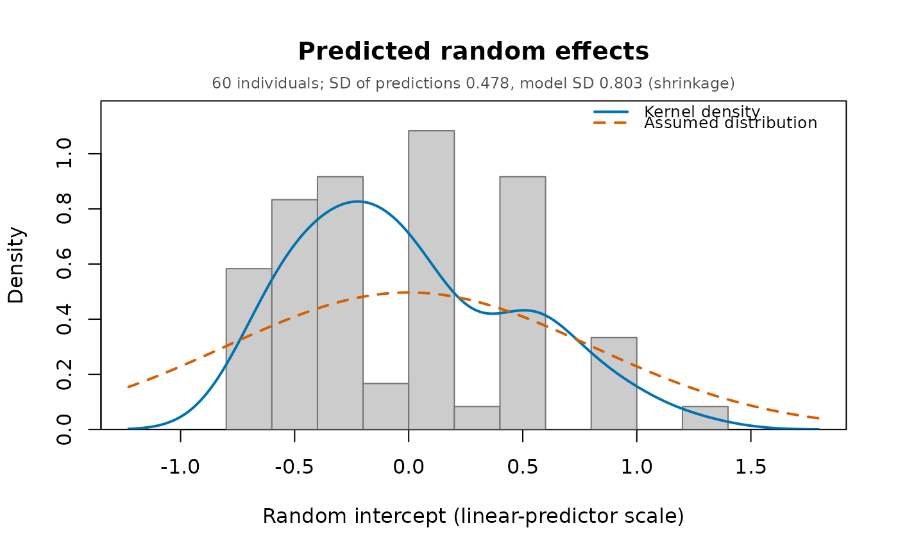
plot(fit, which = "correlation", cells = TRUE)
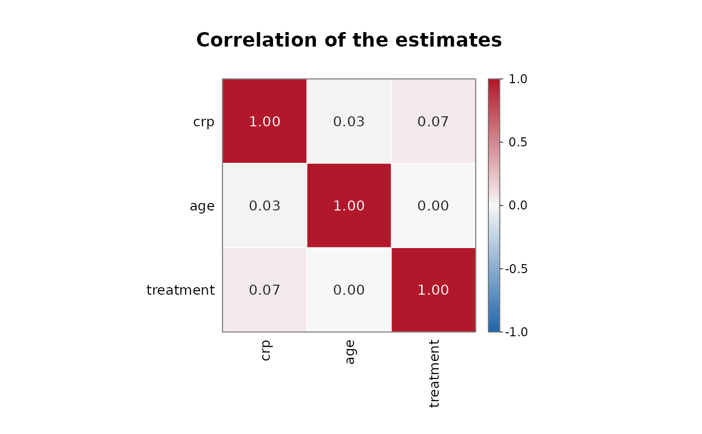